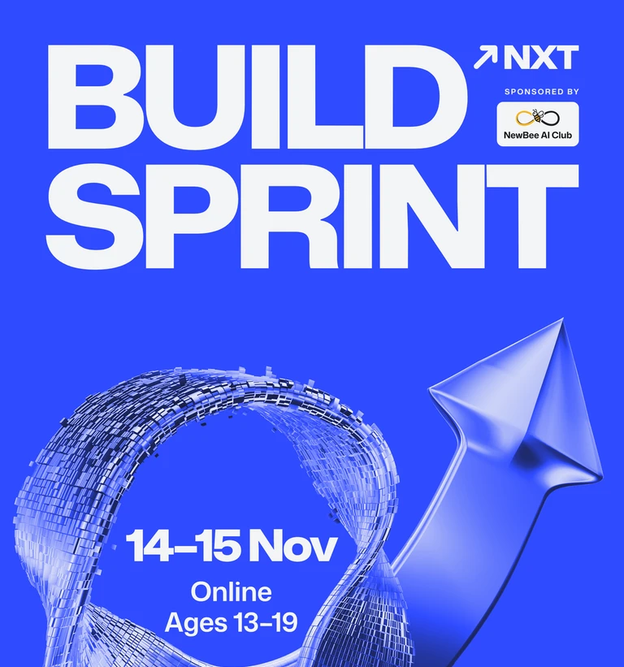

Give organisers credit
The S series documents our support for external teams. Their events remain their achievements, not events we claim to have organised.
S / SUPPORT
Alongside learning together, we help others create.
Meet the teams we support, the events they run, and what each action makes possible.

S01 · OUR FIRST SUPPORT STORY · COMPLETED
NXT Build Sprint
14–15 November 2026 · Online, worldwide
Organised by NXT · Sponsored by NewBee AI Club
Young builders from nine countries made something useful for a real person they knew. The event was conducted in English; its showcase recording is available in the original language.
Explore S01 · Film & results →The S series documents our support for external teams. Their events remain their achievements, not events we claim to have organised.
We link to original event pages, reports and recordings, and distinguish registrations, submissions, announced plans and verified results.
Put the work first, protect participants’ privacy and describe our actual contribution without overstating its impact.